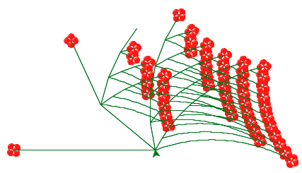

In the Scheme Interpreter project, I took on the challenging yet rewarding task of creating an interpreter for a subset of the Scheme programming language. This project involved not just the technical aspects of interpreting Scheme expressions, but also a deep dive into the nuances of programming language design, similar to the concepts outlined in "Composing Programs." Throughout this journey, I honed my skills in evaluating and applying Scheme expressions, handling special forms, and meticulously crafting classes to accurately represent these expressions. In addition to these technical aspects, the project offered me valuable practice in debugging and testing to ensure my code's integrity. As I navigated through the intricacies of the interpreter, which spanned across several files like scheme_eval_apply.py, scheme_forms.py, and scheme_classes.py, I gained profound insights into the design challenges and considerations inherent in programming languages. This experience was not just about building an interpreter; it was an exploratory journey into the realm of language quirks and the sophisticated architecture of Scheme. By the end of the project, I had not only developed a functional interpreter but also deepened my understanding of the elegant mechanics that drive programming languages.